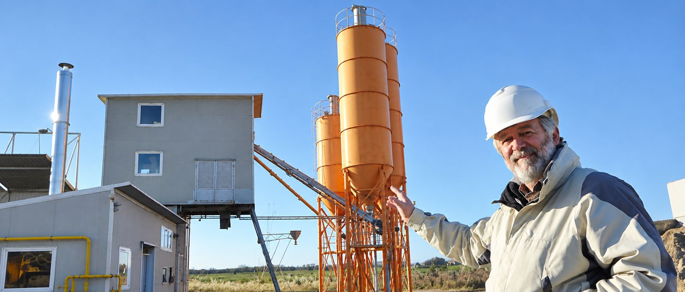
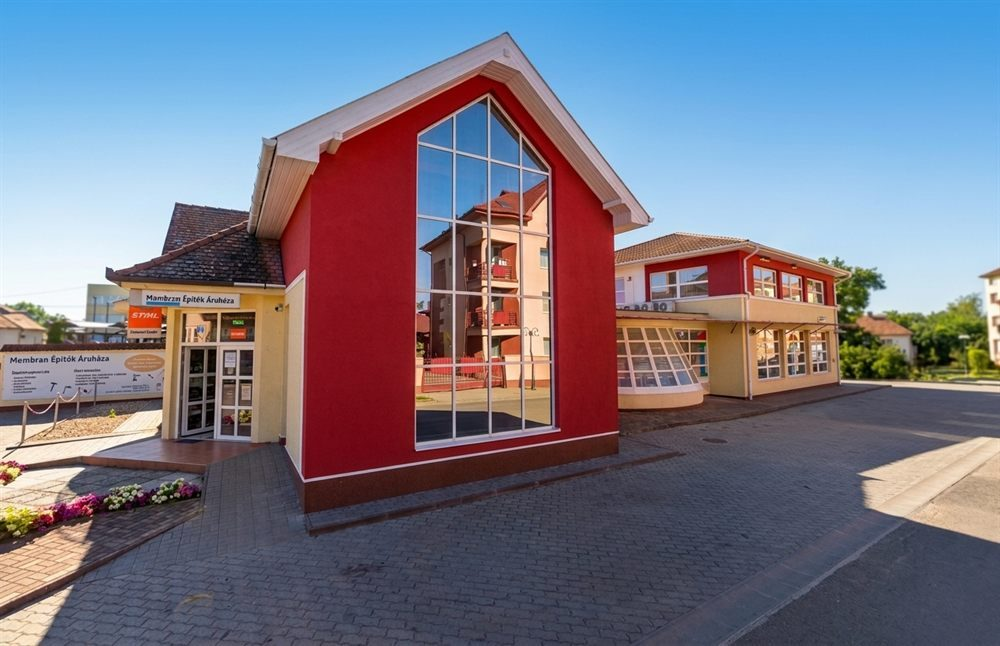
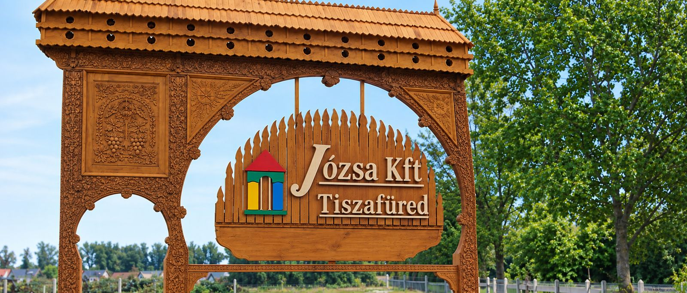

1991 óta
Beton és építőanyag Tiszafüreden.
Saját betongyárunkból szállítunk transzportbetont, a Membrán Építők Áruházában pedig megtalálja, ami az építkezéshez és a felújításhoz kell.

Transzportbeton
Betongyár · Tiszafüred, Igari út 61.
- 55 m³/óra, télen-nyáron
- C8/10–C40/50, tanúsítva
- Mixer, pumpa, daru

Membrán Építők Áruháza
Áruház · Tiszafüred, Petőfi Sándor u. 4.
- Épületgépészet, villamosság
- Festék, vasáru, szerszám
- STIHL-forgalmazó
- 1991óta dolgozunk Tiszafüreden és a Tisza-tó körül
- 55 m³/órabetongyári kapacitás, télen-nyáron
- C8–C40tanúsított betonosztályok · KTI-CPR-0042
- 36 mgémes betonpumpa a bedolgozáshoz
- STIHLkizárólagos térségi forgalmazó 2013 óta
Transzportbeton
Beton Tiszafüredről,
télen-nyáron.
A betongyárunk automatizált és számítógép-vezérelt. Az adaléktárolók fűthetők, a keverővíz melegíthető, így télen is gyártunk. A minőséget akkreditált vizsgáló szervezet ellenőrzi rendszeresen.
óránkénti kapacitás
Bármekkora mennyiséget kiszolgálunk. Előre is rendelhet, de munkanapokon a telephelyen azonnal is megkapja.
tanúsított szilárdság
MSZ 4798 szerint C8/10-től C40/50-ig, F1–F4 konzisztencia, 8–24 mm-es szemnagyság. Üzemi gyártásellenőrzés: KTI-CPR-0042.
gémes betonpumpa
Mixerrel és billenős tehergépkocsival szállítunk. Autódarut, toronydarut, telepíthető és önjáró betonpumpát is biztosítunk.
Árjegyzék
Bruttó telephelyi árak, F2 (kissé képlékeny) konzisztenciára. Érvényes 2025. április 1-től visszavonásig.
| Betonosztály | Bruttó Ft/m³ |
|---|
50 m³ felett 4% engedményt adunk. Egyedi minőségre (más cement, kitéti osztály) külön kalkulációt készítünk. Cement: CEM III/A 32,5 R MSR; kavics: Nyékládházi bánya.
Mennyibe kerül kiszállítva?
Előzetes becslés az árjegyzék alapján. A pontos árat telefonon adjuk meg.
- Beton
- –
- Mennyiségi engedmény (4%)
- –
- Szállítás
- –
A szállítási díj az úthasználati díjat is tartalmazza. Minimum számlázott mennyiség fordulónként: mixer 6 m³, billenős 4 m³. A pumpa (36 m: 33 020 Ft/óra, 28 m: 27 940 Ft/óra) és a pótlékok nincsenek benne.
Szabó Ferenc ügyvezető · a telephelyen H–P 6:30–16:00, Szo 13:00-ig
Szakáruház
Membrán Építők Áruháza
2011 óta a miénk. Eredetileg épületgépészeti és vasáru-szaküzlet volt, azóta minden megvan benne, ami egy építkezéshez vagy felújításhoz kell. A csillárok és lámpák egy egész emeletet foglalnak el.
- STIHL gépek
- Épületgépészet
- Villamosság
- Csillárok, lámpák
- Festékek, lakkok
- Vasáruk
- Szerszámok, kisgépek
- Zárak, vasalatok
- Szaniterek
- Emeléstechnika
- Munkavédelem
- Kulcsmásolás
5350 Tiszafüred, Petőfi Sándor u. 4.
- Áruház+36 59 511 345
- Fazekas Gyula+36 30 375 4952
- Szabó Réka+36 30 638 9091
- E-mailjozsakft.membran@gmail.com

Rólunk
Harmincöt éve itt, Tiszafüreden.
Családi vállalkozásként indultunk 1991-ben, és ma is az vagyunk. Ma a betongyárunk és a Membrán Építők Áruháza szolgálja ki Tiszafüredet és a Tisza-tó környékét.
- 1991
Megalakul a cég jogelődje.
- 1996
Korlátolt felelősségű társasággá alakulunk.
- 2004
Bevezetjük az ISO 9001 minőségirányítási rendszert.
- 2011
Megvásároljuk a Membrán Építők Áruházát.
- 2013
A STIHL kizárólagos térségi forgalmazói leszünk.
- 2021
Integrált vállalatirányítási rendszert vezetünk be (GINOP-projekt).
„Józsa Béla vagyok, a cég vezetője és társtulajdonosa: építészmérnök, tervező és felelős műszaki vezető, az építész kamara tagja. Az elmúlt évtizedekben főként Tiszafüreden és környékén építettünk.”
Kapcsolat
Kérjen ajánlatot!
Hívjon minket, vagy írjon e-mailt: betonrendelés és árajánlat a központban, termékkérdés az áruházban.
Központ és betongyár
5350 Tiszafüred, Igari út 61. · pf. 132Betongyár: H–P 6:30–16:00 · Szo 6:30–13:00
- Központ+36 59 511 178
- Józsa Béla, ügyvezető+36 30 958 1322
- Szabó Ferenc (beton)+36 30 280 3971
- E-mailjozsakft@enternet.hu
Membrán Építők Áruháza
5350 Tiszafüred, Petőfi Sándor u. 4.- Áruház+36 59 511 345
- Fazekas Gyula+36 30 375 4952
- Szabó Réka+36 30 638 9091
- E-mailjozsakft.membran@gmail.com